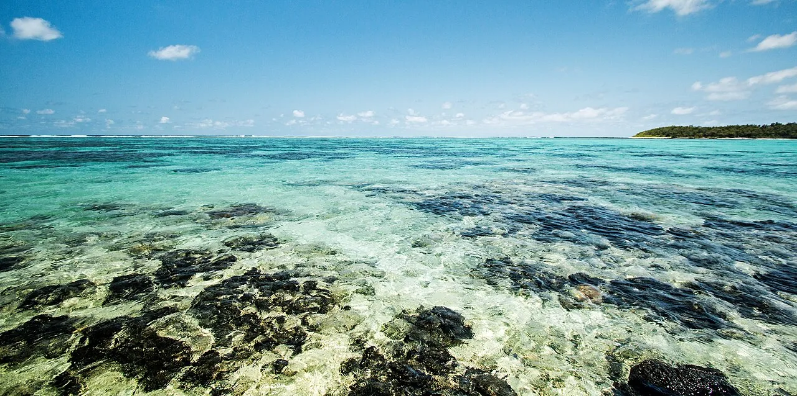

Blue Bay
Mahébourg, Maurice · snorkeling, baignade, kayak

Parc marin au sud-est de Maurice, avec un jardin de corail à quelques brasses. Idéal pour découvrir la vie du lagon.
- Lieu
- Mahébourg, Maurice
- Niveau
- Débutant
- Activités
- snorkeling, baignade, kayak
- Type d'eau
- Mer / océan
- Coordonnées
- -20.45, 57.72 (position approximative du secteur)
Dangers à connaître
- Circulation de bateaux.
- Corail fragile.
Le conseil d'Ocean Buddy
Utilise la zone de baignade balisée : les bateaux circulent dans le parc.
Ouvrir dans Ocean Buddy Télécharger sur l'App Store
Source : Fiche Ocean Buddy · septembre 2026 · à vérifier localement.